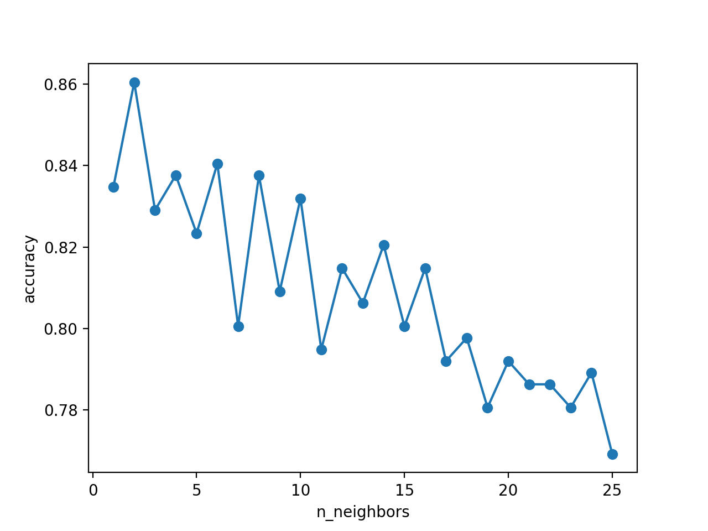
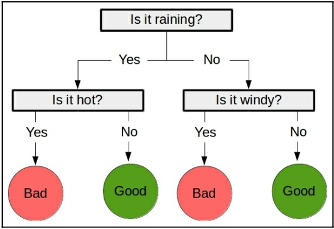

前言
自用笔记，目前在看《Learning Data Mining with python 2nd Edition》。
在图书馆发现这本书（第一版译本），顿时就吸引了我的注意力，之前学校也开过《数据挖掘》的课，蛮有意思的，也就纯理论相关，一直没实践。
然后通过书上给的源代码链接，发现这本书今年 4 月份出了第二版，就下了电子版来研究了。
Getting Started with Data Mining
affinity analysis
第一个例子是关于affinity analysis，给出历史订单，当 X 和 Y 同时购买时，可以找出如下规则：
当用户买了 X(premise)，有多大可能性买 Y(conclusion)。
- 支持度(support): 历史订单中出现 premise->conclusion 的个数
- 置信度(confidence)：支持度 / 历史订单中出现 premise 的个数
最后可以根据置信度从大到小排序，从而帮助我们做出决策。
实现 OneR 算法
第二个例子是分类问题，通过 scikit-learn 库的数据集 IRIS（花的数据集，有 3 种类别）来介绍 OneR(One Rule)算法，也就是通过选择 一个 最好的特征来判断类别。
该数据集有 150 个样本，4 个特征，以及每个样本对应的类别。首先对各个特征值进行 离散化，书上是通过各个特征值的均值来作为阈值，大于均值为 1，否则为 0，这样各个特征值只有 2 种数值了。
然后实现 OneR 算法：
- 依次遍历每个特征
- 遍历特征的每个值(
train_feature_value)- 根据所有样本中的特征为该值找出最频繁的类
- 计算错误的样本（不属于最频繁的类）个数
- 计算该特征总的错误个数
- 遍历特征的每个值(
- 使用错误个数最少的特征来分类
# X 样本, y_true 样本对应的类别，feature 选择的特征，value 特征的值
def train_feature_value(X, y_true, feature, value):
class_count = defaultdict(int)
for sample, cls in zip(X, y_true):
if sample[feature] == value:
class_count[cls] += 1
most_frequent_class = sorted(class_count.items(), key=itemgetter(1), reverse=True)[0][0]
error = sum([cnt for cls, cnt in class_count.items() if cls != most_frequent_class])
return most_frequent_class, error
def train(X, y_true, feature):
n_samples, n_features = X.shape
values = set(X[:, feature])
predictors = {}
errors = []
for current_value in values:
most_frequent_class, error = train_feature_value(X, y_true, feature, current_value)
predictors[current_value] = most_frequent_class
errors.append(error)
total_error = sum(errors)
return predictors, total_error
def OneR(X, y_true):
all_predictors = {}
errors = {}
for feature in range(X.shape[1]):
predictor, total_error = train(X, y_true, feature)
all_predictors[feature] = predictor
errors[feature] = total_error
feature = sorted(errors.items(), key=itemgetter(1))[0][0]
return {'feature': feature, 'predictor': all_predictors[feature]}解下来就是测试算法了，需要将数据集划分为两个部分：训练集 和测试集 ，以防出现overfitting 问题，也就是说训练的模型对训练集能进行很好的分类，但是遇到新的样本效果就会很差了。
用 sklearn.cross_validation(cross validation 简称CV) 的train_test_split来划分数据集，默认随机抽取 75% 样本作为训练集，剩下的为测试集：
from sklearn.cross_validation import train_test_split
Xd_train, Xd_test, y_train, y_test = train_test_split(X_d, Y)测试精度，65.8%，还行：
def predict(X_test, model):
var = model['feature']
predictor = model['predictor']
y_predicted = np.array([predictor[int(sample[var])] for sample in X_test])
return y_predicted
In [371]: np.mean(predict(Xd_test, model) == y_test)
Out[371]: 0.65789473684210531用 scikit-learn 的Estimators分类
scikit-learn库与很多数据挖掘算法，这一章介绍如何调用它来运行一些数据挖掘算法（分类）。
有 3 个概念需要注意：
- Estimators: 用于分类、聚类、回归
- Transformers: 用于预处理、选择数据
- Pipelines: 将工作流程整合到一块复用
Estimators
Estimators 有 2 个比较重要的函数：
fit(): 执行训练用算法，设置内部参数。有 2 个输入：训练集和对应的类型（就像前面提到的OneR(X, y_true)）predict()：只有一个测试集输入，输出预测的分类。（就像前面提到的predict(X_test, model)）
Nearest neighbors 算法
这个算法根据样本周围最近的几个邻居的计数（复杂点的有权重）来判断类型。
由于需要计算每个样本的距离，无疑增加了计算量，有很多优化的算法，比如使用树来进行距离计算，这些算法相当复杂，好在 scikit-learn 库实现了这些算法。
对于 categorical-based 数据集效果比较差，可能需要预处理。
距离度量
因为涉及到最近，那么需要距离来度量。书上介绍了 3 种度量的方法：
- Euclidean 距离，也就是每个特征平方差的和的平方根（当特征比较多的时候，各个样本可能都差不多近。。）
- Manhattan 距离，每个特征的绝对差的和（当特征比较大的时候，可能会无视那些比较小的特征值了，可以通过正规化来解决）
- Cosine 距离，特征向量的夹角，丢失了长度信息（由于不考虑向量长度，适合多个特征的情况。比如可以用于文本挖掘）
读取数据集
从这开始，书上介绍了一个利用 Estimators 进行训练的数据集。数据集 (http://archive.ics.uci.edu/ml/machine-learning-databases/ionosphere/) 为 csv 格式，共有 351 个样本，每个 34 个特征，2 个分类：good 和 bad。每行前 34 个为特征，最后一个为分类。
然后读到 X，Y 中：
X = np.zeros((351, 34), dtype='float')
y = np.zeros((351,), dtype='bool')
with open('../data/ionosphere.data', 'r') as f:
reader = csv.reader(f)
for i, row in enumerate(reader):
data = [float(dat) for dat in row[:-1]]
X[i] = data
Y[i] = row[-1] == 'g'标准工作流程
首先划分数据集，分为训练集和测试集。
在开始之前，我来测试一下之前的 OneR 算法精度：
Xd = (X > X.mean(axis=0)).astype(int)
Xd_train, Xd_test, Y_train, Y_test = train_test_split(Xd, Y)
model = OneR(Xd_train, Y_train)
In [590]: (predict(Xd_test, model) == Y_test).mean()
Out[590]: 0.76136363636363635精度 76.14%，还不错啊。。
现在来试试 estimators 的精度，同样地划分数据集。
from sklearn.neighbors import KNeighborsClassifier
X_train, X_test, Y_train, Y_test = train_test_split(X, Y)
estimator = KNeighborsClassifier()开始 训练：
In [593]: estimator.fit(X_train, Y_train)
Out[593]:
KNeighborsClassifier(algorithm='auto', leaf_size=30, metric='minkowski',
metric_params=None, n_jobs=1, n_neighbors=5, p=2,
weights='uniform')测试精度：
In [594]: (estimator.predict(X_test) == Y_test).mean()
Out[594]: 0.8636363636363636586.37%，精度明显提高了。还是默认参数，要是自己对应用比较熟悉的话，调参大法好。后面章节还会介绍参数搜索。(parameter search)
当然精度提高的代价伴随着运算量的增加。
Cross-fold validation(CV)
若数据只划分成一组训练集和测试集，那么难免会出现在幸运的情况下结果比较好。
若将数据划分成多组（fold）训练集和测试集的话，训练每一组求出其精度，在求出平均精度，能够较好的反映出算法的效果。
cross-fold validation框架很好地解决这个问题，过程如下：
- 将整个数据集划分成 K 个部分(folds)，基本等大
- 每部分，执行如下步骤
- 将该部分作为测试集
- 剩余 (K-1) 部分作为训练集
- 评估当前测试集的精度
- 得出每部分的精度，求出均值
具体如下，先来看看 OneR 的效果，
from sklearn.base import BaseEstimator, ClassifierMixin
from sklearn.cross_validation import cross_val_score
class OneRES(BaseEstimator, ClassifierMixin):
def __init__(self):
self.model = {}
def fit(self, X, Y):
Xd = (X >= X.mean(axis=0)).astype(int)
self.model = OneR(Xd, Y)
def predict(self, X):
Xd = (X >= X.mean(axis=0)).astype(int)
return predict(Xd, self.model)
scores = cross_val_score(estimator, X, Y, scoring='accuracy')
In [669]: scores
Out[669]: array([ 0.66666667, 0.65811966, 0.68376068])
In [670]: scores.mean()
Out[670]: 0.66951566951566954精度 66.95%，效果很差了。
再来看看 estimator 的精度：
from sklearn.cross_validation import cross_val_score
scores = cross_val_score(estimator, X, Y, scoring='accuracy')
In [623]: scores
Out[623]: array([ 0.82051282, 0.78632479, 0.86324786])
In [624]: scores.mean()
Out[624]: 0.8233618233618234得出平均精度 82.34%，很高了。
调参
因为参数可以任意调整，那么当针对特定应用使用特定的参数的效果比使用随意的参数要好。
就拿这个 Nearest neighbors 算法来说，影响最大的参数应该是被预测样本的邻居数了，邻居过多或过少效果都不好，一般取 5 到 10 个。
在 scikit-learn 中，邻居参数名为n_neighbors，可以通过设置为一个范围的值，来观察参数对结果的影响。
from matplotlib import pyplot as plt
avg_score = []
para_values = list(range(1, 25 + 1))
for n_neighbors in para_values:
estimator = KNeighborsClassifier(n_neighbors=n_neighbors)
scores = cross_val_score(estimator, X, Y, scoring='accuracy')
avg_score.append(scores.mean())
plt.plot(para_values, avg_score, '-o')
plt.xlabel('n_neighbors')
plt.ylabel('accuracy')如图，显然随着邻居增加的情况下，精度越来越低了。在 2 个邻居的情况下效果比较好：

预处理
因为有些特征的值比较大，会影响到其他特征。
X_broken = X.copy()
X_broken[:, ::2] /= 10
estimator = KNeighborsClassifier()
In [732]: cross_val_score(estimator, X, Y, scoring='accuracy')
Out[732]: array([ 0.82051282, 0.78632479, 0.86324786])
In [733]: cross_val_score(estimator, X_broken, Y, scoring='accuracy')
Out[733]: array([ 0.75213675, 0.64957265, 0.74358974])所以如果将所有特征缩小到 0-1 范围内的值，就能很好解决这个问题。
标准预处理
将特征正规化，可以用 scikit-learn 的MinMaxScaler类。
from sklearn.preprocessing import MinMaxScaler默认将特征缩放到 0-1 范围，若设置为其他值，将线性映射到这个范围内。
进行预处理，使用 transform 函数，首先需要像分类器那样训练，若直接使用 fit_transform 则可以合并那些步骤。
X_transformed = MinMaxScaler().fit_transform(X)放到一起
将前面几个步骤整合起来：
X_transformed = MinMaxScaler().fit_transform(X_broken)
estimator = KNeighborsClassifier()
In [765]: cross_val_score(estimator, X_transformed, Y, scoring='accuracy')
Out[765]: array([ 0.82905983, 0.77777778, 0.86324786])Pipelines
使用 Pipelines 可以将几个过程串起来（比如数据预处理、训练），来减少代码复杂度。
from sklearn.pipeline import Pipeline要求最后一步的结果为一个 Estimator，前面步骤为 Transformers。在 Transformers 中，数据被依次改变，前一步的输出作为下一步的输入。
前面的例子，可以分为如下两步：
- 使用
MinMaxScaler来缩放特征（Transformer） - 使用
KNeighborsClassifier来分类（Estimator）
每步可以用一个元组来描述('name', step)，放到列表作为 Pipeline 的输入：
scaling_pipeline = Pipeline([('scale', MinMaxScaler()),
('predict', KNeighborsClassifier())])
In [776]: cross_val_score(scaling_pipeline, X, Y, scoring='accuracy')
Out[776]: array([ 0.82905983, 0.77777778, 0.86324786])使用决策树来预测比赛结果
这一章介绍用决策树来预测 NBA 比赛的结果，首先使用 pandas 读取、操作数据集，然后使用决策树来分类，再用随机森林优化决策树效果，挖掘现实中的数据，最后创建一个 robust 模型。
读取数据集
获取数据集
首先获取数据集，2015-2016 年各月的比赛数据可以到这个网址中获取：https://www.basketball-reference.com/leagues/NBA_2016_games.html，我已经下载好了，一共 1316 场比赛：basketball.csv
使用 pandas 读取数据集
import pandas as pd
ds = pd.read_csv('basketball.csv')
In [194]: ds.head(5)
Out[194]:
Date Start (ET) Visitor/Neutral PTS \
0 Tue Oct 27 2015 8:00 pm Detroit Pistons 106
1 Tue Oct 27 2015 8:00 pm Cleveland Cavaliers 95
2 Tue Oct 27 2015 10:30 pm New Orleans Pelicans 95
3 Wed Oct 28 2015 7:30 pm Philadelphia 76ers 95
4 Wed Oct 28 2015 7:30 pm Chicago Bulls 115
Home/Neutral PTS.1 Unnamed: 6 Unnamed: 7 Notes
0 Atlanta Hawks 94 Box Score NaN NaN
1 Chicago Bulls 97 Box Score NaN NaN
2 Golden State Warriors 111 Box Score NaN NaN
3 Boston Celtics 112 Box Score NaN NaN
4 Brooklyn Nets 100 Box Score NaN NaN清洗数据集
仔细观察 ds 的结果发现，日期字段是字符串，我们需要转换成日期对象，还有各个字段的含义不明，这可以在 read_csv 的时候通过参数来解决。
ds = pd.read_csv('basketball.csv', parse_dates=["Date"])
ds.columns = ["Date", "Start (ET)", "Visitor Team", "VisitorPts", "Home Team", "HomePts", "OT?", "Score Type", "Notes"]
In [200]: ds.head()
Out[200]:
Date Start (ET) Visitor Team VisitorPts \
0 2015-10-27 8:00 pm Detroit Pistons 106
1 2015-10-27 8:00 pm Cleveland Cavaliers 95
2 2015-10-27 10:30 pm New Orleans Pelicans 95
3 2015-10-28 7:30 pm Philadelphia 76ers 95
4 2015-10-28 7:30 pm Chicago Bulls 115
Home Team HomePts OT? Score Type Notes
0 Atlanta Hawks 94 Box Score NaN NaN
1 Chicago Bulls 97 Box Score NaN NaN
2 Golden State Warriors 111 Box Score NaN NaN
3 Boston Celtics 112 Box Score NaN NaN
4 Brooklyn Nets 100 Box Score NaN NaN在检查一下数据类型是否正确：
In [202]: ds.dtypes
Out[202]:
Date datetime64[ns]
Start (ET) object
Visitor Team object
VisitorPts int64
Home Team object
HomePts int64
OT? object
Score Type object
Notes object
dtype: object提取特征
数据集没有明确告诉我们是哪一方胜利，在篮球比赛中，谁比分高谁获胜，从而可以建立新特征：
ds["HomeWin"] = ds["VisitorPts"] < ds["HomePts"]由于后面需要用 scikit-learn 分类，而它不支持从 pandas 读取数据，所以可以先存到 numpy 数组中：
y_true = ds["HomeWin"].values在体育运动中，Home Team 优势比较大，那么先来预估获胜几率有多大呢：
In [355]: ds['HomeWin'].mean()
Out[355]: 0.5942249240121581达到 0.59，比 50% 要高，也验证了这个说法 = =
有了 HomeWin 这个新特征，我们可以继续创建特征，用来表示在这一场比赛中的两个参赛队各自在前一场的胜负情况。
won_last = defaultdict(bool)
ds["VisitorLastWin"] = False
ds["HomeLastWin"] = False
for idx, row in ds.sort_values(by='Date').iterrows():
home_team = row["Home Team"]
visitor_team = row["Visitor Team"]
row["HomeLastWin"] = won_last[home_team]
ds.set_value(idx, "HomeLastWin", won_last[home_team])
ds.set_value(idx, "VisitorLastWin", won_last[visitor_team])
won_last[home_team] = row["HomeWin"]
won_last[visitor_team] = not row["HomeWin"]需要注意的是两个参赛队第一次比赛的话，结果都是 False，这个可以从前年的比赛情况中获取:
In [390]: ds[1000:1005]
Out[390]:
Date Start (ET) Visitor Team VisitorPts \
1000 2016-03-15 7:00 pm Denver Nuggets 110
1001 2016-03-15 8:30 pm Los Angeles Clippers 87
1002 2016-03-16 7:00 pm Oklahoma City Thunder 130
1003 2016-03-16 7:00 pm Orlando Magic 99
1004 2016-03-16 7:00 pm Dallas Mavericks 98
Home Team HomePts OT? Score Type Notes HomeWin \
1000 Orlando Magic 116 Box Score NaN NaN True
1001 San Antonio Spurs 108 Box Score NaN NaN True
1002 Boston Celtics 109 Box Score NaN NaN False
1003 Charlotte Hornets 107 Box Score NaN NaN True
1004 Cleveland Cavaliers 99 Box Score NaN NaN True
HomeLastWin VisitorLastWin
1000 False False
1001 True False
1002 False True
1003 False True
1004 False True决策树
先来看看决策树的样子，有点像流程图了，是一个监督算法：

大多数分类算法，都有两个阶段：
- 训练阶段(training)，使用训练集构建决策树。之前介绍的最近邻居算法是lazy learner，也就是仅在预测的时候才工作，而这个是eager learner，在训练阶段做工作，在预测阶段需要做的就少了。
- 预测阶段(predicting)，使用构建好的决策树来预测新样本的类型。
构建决策树算法大多数一样，从最开始的节点走，选最好的特征来创建下一个节点，再选次好的特征创建，以此类推。
scikit-learn 实现 **Classification and Regression Tree(CART)** 算法，也就是 dDecision tree 类所默认使用的，它可以使用分类 (categorical) 或连续值 (continuous) 的特征。
参数
决策树中最重要的一个参数是stopping criterion，也就是决定了构建树的程度，避免过拟合的问题。
另一个避免过拟合的是剪枝(pruning)，除去一些提供的信息较少的节点。
在 scikit-learn 中，决策树使用以下参数来决定何时完成构建：
- min_samples_split: 创建一个节点需要多少样本信息
- min_samples_leaf: 保留一个节点需要多少样本信息
创建决策树过程中，常用的 2 个参数：
- Gini impurity
- Information gain
使用决策树
首先创建一个决策树对象：
from sklearn.tree import DecisionTreeClassifier
clf = DecisionTreeClassifier()决策树也是 estimators，因此有 fit 和predict方法。可以使用 cross_val_score 方法来测试平均精度。
In [409]: cross_val_score(clf, X_previouswins, y_true, scoring='accuracy').mean()
Out[409]: 0.59422445505386179显然平均精度比瞎猜要高一些，但是和之前预估只采用 Home Team 的精度差不多。。
特征工程 (Feature engineering) 在数据挖掘中相当重要，选择好的特征可以导致好的结果，甚至比算法还重要。
运动结果预测
接下来可以尝试其他特征了，将各个队输入到算法，检测一下效果。
放到一起
首先我们需要创建一个特征，来告诉我们 home team 是否比 visitor team 有优势，这个可以从前一年 2015 年比赛结果获得，https://www.basketball-reference.com/leagues/NBA_2015_standings.html#all_expanded_standings，数据我已经下载下来了：standings.csv
standings = pd.read_csv('standings.csv', skiprows=1)
In [411]: standings.head(5)
Out[411]:
Rk Team Overall Home Road E W A C \
0 1 Golden State Warriors 67-15 39-2 28-13 25-5 42-10 9-1 7-3
1 2 Atlanta Hawks 60-22 35-6 25-16 38-14 22-8 12-6 14-4
2 3 Houston Rockets 56-26 30-11 26-15 23-7 33-19 9-1 8-2
3 4 Los Angeles Clippers 56-26 30-11 26-15 19-11 37-15 7-3 6-4
4 5 Memphis Grizzlies 55-27 31-10 24-17 20-10 35-17 8-2 5-5
SE ... Post ≤3 ≥10 Oct Nov Dec Jan Feb Mar Apr
0 9-1 ... 25-6 5-3 45-9 1-0 13-2 11-3 12-3 8-3 16-2 6-2
1 12-4 ... 17-11 6-4 30-10 0-1 9-5 14-2 17-0 7-4 9-7 4-3
2 6-4 ... 20-9 8-4 31-14 2-0 11-4 9-5 11-6 7-3 10-6 6-2
3 6-4 ... 21-7 3-5 33-9 2-0 9-5 11-6 11-4 5-6 11-5 7-0
4 7-3 ... 16-13 9-3 26-13 2-0 13-2 8-6 12-4 7-4 9-8 4-3
[5 rows x 24 columns]创建一个新特征，表明 Home team 比 Visitor Team 有优势：
ds["HomeTeamRanksHigher"] = False
for idx, row in ds.iterrows():
home_team = row["Home Team"]
visitor_team = row["Visitor Team"]
home_rank = standings[standings["Team"] == home_team]["Rk"].values[0]
visitor_rank = standings[standings["Team"] == visitor_team]["Rk"].values[0]
ds.set_value(idx, "HomeTeamRanksHigher", home_rank < visitor_rank)接下来试试精度，
X_homehigher = ds[[ "HomeTeamRanksHigher", "HomeLastWin", "VisitorLastWin",]].values
clf = DecisionTreeClassifier()
In [460]: cross_val_score(clf, X_homehigher, y_true, scoring='accuracy').mean()
Out[460]: 0.60865985028933201精度达到 60%，比只选 Home team 好那么一丢丢，应该还能更好吧。
虽然名次高的参赛队更有优势更有可能获胜，但是不同的队有不同的策略，或者某些队针对另一些队从而更容易获胜。所以可以考虑在创建一个特征，表明这两个参赛队在上一场比赛中两队的获胜情况。
last_match_winner = defaultdict(str)
ds["HomeTeamWonLast"] = False
for idx, row in ds.iterrows():
home_team = row["Home Team"]
visitor_team = row["Visitor Team"]
team = tuple(sorted([home_team, visitor_team]))
home_team_won_last = last_match_winner[team] == home_team
ds.set_value(idx, "HomeTeamWonLast", home_team_won_last)
winner = home_team if row["HomeWin"] else visitor_team
last_match_winner[team] = winner再来看看精度：
X_lastwinner = ds[[ "HomeTeamWonLast", "HomeTeamRanksHigher", "HomeLastWin", "VisitorLastWin",]].values
clf = DecisionTreeClassifier()
In [479]: cross_val_score(clf, X_lastwinner, y_true, scoring='accuracy').mean()
Out[479]: 0.62158877759401987再次提高到一个层次了…
最后，如果将特征仅仅设为两个参赛队（名）来构建决策树，效果如何呢？
虽然 scikit-learn 支持分类数据，但是实现的时候需要将它们转换成数值数据，而不是字符串。可以用LabelEncoder transformer 来将参赛队（名）转换成数值数据，给参赛队（名）依次编个号。
from sklearn.preprocessing import LabelEncoder
encoding = LabelEncoder()
# 为所有参赛队（名）设置编号
encoding.fit(ds["Home Team"].values)
home_teams = encoding.transform(dataset["Home Team"].values)
visitor_teams = encoding.transform(dataset["Visitor Team"].values)
# X_teams 的每一行表示两个参赛队（名）的编号
X_teams = np.vstack((home_teams, visitor_teams)).T问题来了，这里的参赛队编号都是连续的数值，那么在训练过程中，会将参赛队 1 和参赛队 2 看成是相似的，而参赛队 1 和 10 是不相似的，然而各个参赛队本来就没有相不相似的说法，所以还需要处理一下。
可以使用OneHotEncoder transformer 来将编号转换成一个个二进制串（长度为编号个数），具体是这样的，有 30 个参赛队，那么编号将从 0, 1, …, 29，二进制串的长度将会是 30，第几个参赛队的那一位将是 1，其他位是 0。比如 7 号参赛队，第 7 位是 1，其他位是 0，从而形成这个队的二进制串。
from sklearn.preprocessing import OneHotEncoder
onehot = OneHotEncoder()
X_teams = onehot.fit_transform(X_teams).todense()来看看精度：
clf = DecisionTreeClassifier()
In [520]: cross_val_score(clf, X_teams, y_true, scoring='accuracy').mean()
Out[520]: 0.62538355124244605似乎又提高了一点点。
随机森林
续…